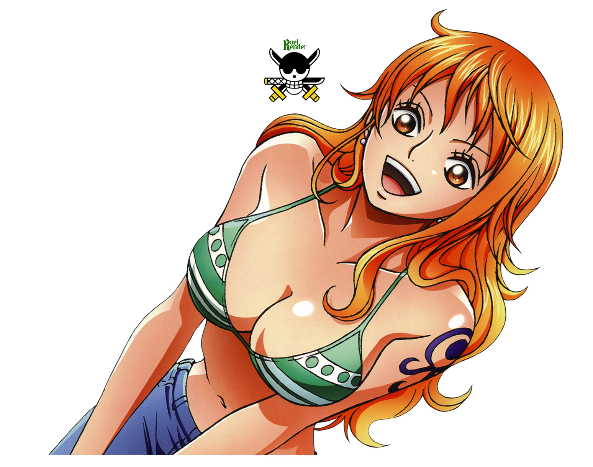
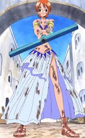

"Cat Burglar" Nami[4] is a pirate and the navigator of the Straw Hat Pirates. She was the third member of the crew and the second to join, doing so during the Orange Town Arc.[11] Later, she left and betrayed the crew during the Baratie Arc, but rejoined at the end of the Arlong Park Arc, after her past and true intentions were revealed.[12] She has a bounty of Beli66,000,000.[10]
|  | |||
|  |